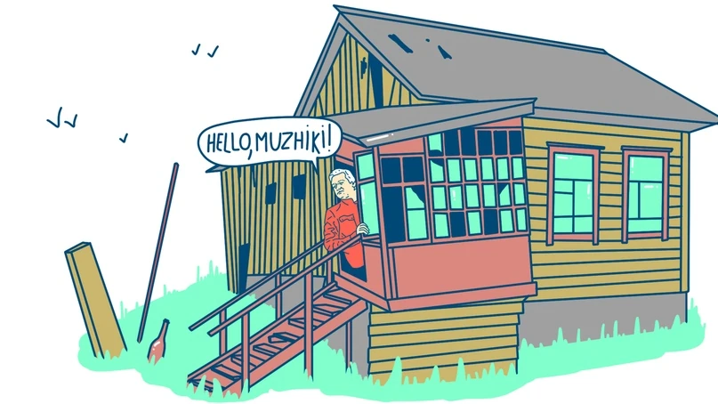
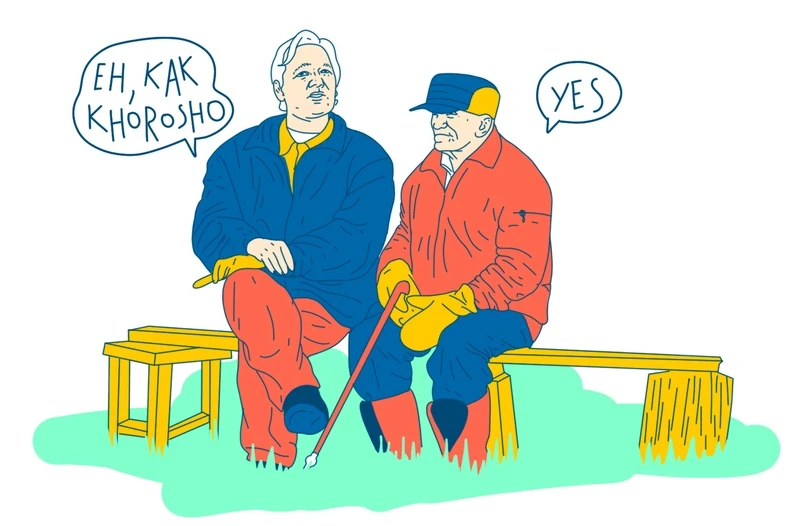

Подлые эквадорцы сдали копам Джулиана Ассанжа. Эх, Джулиан, не с теми ты дружбу водил. Надо было тебе бежать к нам, в Россию! Данила Блюз размышляет о том, что было бы, скрывайся Ассанж на вольных просторах таежной глуши, а не в чулане эквадорского посольства.

Предателям Родины очень важно иметь друзей и очень важно уметь их выбирать. Другое дело, что с предателем Родины, пусть даже это такая поганая, осточертевшая всем страна, как США, дружбы водить никто особо не хочет. Оно и понятно — сегодня ты их предал, а где гарантии, что завтра нас не предашь? Нет уж, братец, иди-ка ты отсюда подобру-поздорову в какую-нибудь другую страну, мы тут таких как ты не жалуем. Так что, прежде, чем секреты отчизны разбазаривать, следует заручиться поддержкой какой-нибудь нормальной страны, которая тебя не выдаст потом спустя семь лет.
Гляньте вот хотя бы на Сноудена. Казалось бы, посредственный стукач, плюгавый очкарик, филателист! А все же главную фишку рубил — пришел в Россию. Теперь горя не знает: живет в московской двушке, бабенку завел, ездит на службу на метро, затаривается в “Пятерочке”, гуляет по выходным в Зарядье и в Парке Горького или пиво пьет с мужиками во дворе за столиком под партеечку в домино или в дурака. Вполне себе неплохая жизнь у подлеца, который свой родной Госдеп сдал со всеми потрохами. У нас бы за такое…
А теперь взгляните на Ассанжа. Казалось бы, голова! Стройный, беловолосый, как юный Энди Уорхол. Надежда новой журналистики, цифровой пират, информационный Гай Фокс, подрывающий своими публикациями троны диктаторов. Ну а что на деле? На деле он повел себя, как последний балбес: побежал прятаться в посольство Эквадора. Господи, да каждый дурак, каждый школьник у нас знает, что все эти южноамериканские режимы — это чушь собачья и ничего более! Сегодня они социалисты и воюют против гегемонии США, а завтра они завзятые капиталисты и мать родную продадут за понюшку кокаина. Ненадежный народец там.
Да и опять же — нищие ведь. Для Эквадора даже один лишний рот — это удар по экономике. Разумеется, никаких Ассанжу ништяков даже при социализме не дали. Поселили в кладовке, между швабр и ведер. Спать приходилось все семь лет на стульях, мыться и стирать одежду — в раковине, жрать чипсы и сникерсы из торгового автомата в коридоре. Что же до интернета, то о нем Ассанжу сказали и вовсе забыть. Так вот семь лет и провел Ассанж в кладовке эквадорского посольства, развлекая себя дрочкой и чтением испаноязычной макулатуры. Пришел он туда, как я уже говорил выше, стройный, как кипарис, беловласый, скуластый. Когда же вчера Ассанжа выводили из посольства британские менты, перед нами предстал человек, напоминающий лицом уже не юного Энди Уорхола, а старого Пахома: опухший, лысый старик с белой бородой, разжиревший от вынужденной неподвижности, полуслепой от постоянного полумрака кладовки и, видимо, немного тронувшийся умом, потому что по лицу его блуждала какая-то нервная улыбка. Хотя, может, это он так радовался тому, что покидает место своего заточения и скоро будет с комфортом отдыхать в британской тюряге.
Эх, Джулиан, дурья твоя голова! Надо уметь выбирать друзей. Поступи ты, как Сноуден, — сейчас жил бы и не тужил. Запрятали бы тебя наши спецслужбы куда-нибудь в таежную глухую деревню, к староверам или в какой-нибудь полуразрушенный перестройкой колхоз под именем Федот Пердыкин (потому что с именем Джулиан в России жить очень вредно), дали бы тебе лопату, мешок свеклы, гармошку да поселили бы в одной из заброшенных изб, коих в нашей стране навалом.
Конечно, Ассанж бы сперва взъерепенился, начал бы качать права, писать письма Путину, в Гаагу и в прочие недосягаемые из русской глуши места, но потом оголодал бы и понял, что скоро зима, а в избе кругом дыры, крыша худая, печь разваливается, а из щели в полу семья барсуков шипит. Пришлось бы тогда Ассанжу идти к соседям и на ломаном русском просить топор, пилу, навоз для замазки и прочие бытовые мелочи. Соседи бы сперва, конечно, Джулиана побили за то, что говорит не по-нашенски, но потом бы сжалились, помогли бы с избой, печку подлатали, барсуков убили и пожарили, дали бы самогонки, дров, научили на гармошке играть, чтоб не свихнулся долгими зимними ночами в одиночестве.
Так, день за днем, месяц за месяцем отслаивался бы Джулиан Ассанж, как луковица, а наружу из него проступал бы Федот Пердыкин — любитель рыбалки и долгих прогулок за грибами, блестящий гармонист и виртуозный частушечник. Постепенно забылись бы информационные войны, заговоры Госдепа, WikiLeaks. Все это теперь казалось бы ему, сидящему на крыльце с папироской и глядящему на огромное звездное небо, каким-то дурным, глупым сном.

“На что всю жизнь потратил? — размышлял бы новорожденный Пердыкин. — На ерунду потратил! Правильно мне Тед, царствие ему небесное, Качинский говорил: “Ассанж, забей ты на этот Госдеп! Всрался он тебе? Поехали на рыбалку, я место знаю — там вот такенные судаки клюют!” Надо было с ним в избушке поселиться, глядишь, и не свихнулся бы человек от одиночества и отсутствия гармошки, не стал бы всех сибирской язвой травить”.
Очень скоро мир забыл бы, что существовал когда-то такой Ассанж, его место заняли бы новые интернет-смутьяны. Десятки лет пройдут, прежде чем о нем снова вспомнил бы какой-то очень дотошный британский журналист. За бешенные деньги он выкупил бы у наших спецслужб адрес и имя Пердыкина и снарядил экспедицию в тайгу. Съеденный комарами, голодный и хромой пришел бы он в поселок, где теперь председательствует Федот. Пришел, да так и рухнул бы мордой в землю от усталости.
Очнувшись, первым что он бы увидел, было бы лицо Федора Пердыкина — сухое, с глубокими, как древесная кора, морщинами, длинной белоснежной бородой и суровым, пробирающим до костей взглядом.
— Вы есть Джулиан Ассанж! WikiLeaks! Я так долго искать вас! Мою экспедицию съели волки, за мной гнался медведь, банда работорговцев, собирающих шишки и ягоды на экспорт, чуть не похитила меня. Скажите, что все это не зря, что я наконец-то найти вас!
— Чаво говоришь? Ниче не пойму! Бредит, видать, малец-то, совсем плохой стал, — Пердыкин оглядел бы собравшихся у постели, те сочувственно качали бы головами и ломали шапки, глядя на больного.
Понемногу люди начали бы креститься и выходить из избушки. Пердыкин остался бы наедине с журналистом. Федот высунул бы голову за дверь, посмотрел налево, направо, убрал голову внутрь, запер дверь, задернул шторы на окошках.
— Ассанж, говоришь, да? — спросил бы он, подходя к журналисту. От свечи на прикроватной тумбочке за Пердыкиным росла бы большая черная тень.
— Йес, Ассанж! Ду ю ноу хим?
— Ай ноу, ай ноу… — равнодушно сказал бы Пердыкин и обеими руками крепко схватил журналиста за шею.
Бедолага почти не сопротивлялся бы, только тщетно пытался избавиться от железной хватки Пердыкина. Долгий и тяжелый поход совсем лишил бы его сил и воли к жизни. Селяне закопали бы журналиста на местном погосте, поставили хороший, добротный крест, выпили за упокой, а Джулиан Ассанж окончательно умер бы в тот день — больше б о нем никто и никогда не спрашивал.